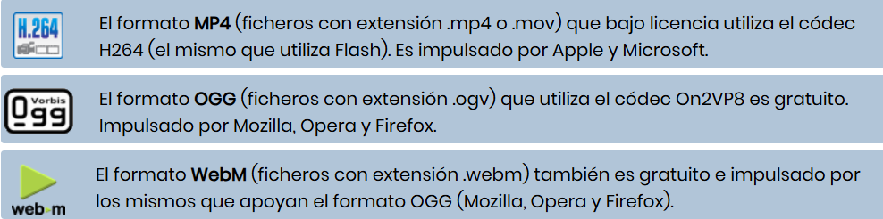

Aunque el código HTML5 para la inserción de vídeo directamente en HTML5 es muy sencillo, todavía tiene un único inconveniente. No todos los navegadores aceptan todos los formatos de vídeo existentes. De hecho de los 3 estándares existentes, el único navegador que los acepta a todos es Chrome.
Así que, si queremos que el vídeo se pueda visualizar en todos los navegadores tendremos que añadir el mismo vídeo en distintos formatos.
Actualmente existen 3 estándares de vídeo que utilizan códecs diferentes y que vienen impulsados por grandes empresas.
Formatos

Video
El código HTML estándar para visualizar un único formato de vídeo sería:
< video >
< source src="video.ogv" type="video/ogg"/ >
< /video >
En el tag < video > es posible incorporar un gran número de atributos que nos ayudan a poder controlar mejor el video, como son:
Atributos
width: Indica la anchura del vídeo, expresada en píxeles (px) o en porcentaje (%)
height: Indica la altura del vídeo, expresada en píxeles (px) o en porcentaje (%)
controls: Establece si tendrá la barra de navegación (play, stop, volumen...) o no
autoplay: Indica si el vídeo se inicia detenido o ya aparece por defecto reproduciéndose
loop: Establece si al acabar el vídeo, éste debe volver a empezar o no
muted: Indica si el audio se reproduce o se reproduce sin audio
preload: Indica si el vídeo se empieza a cargar cuando el navegador carga la página html
poster: Da la posibilidad de establecer una imagen (jpg, gif o png) como fotograma inicial del video